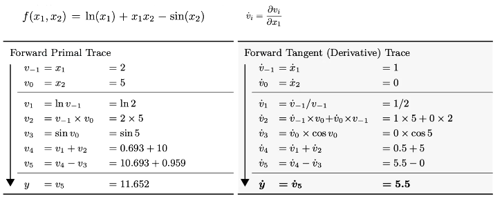
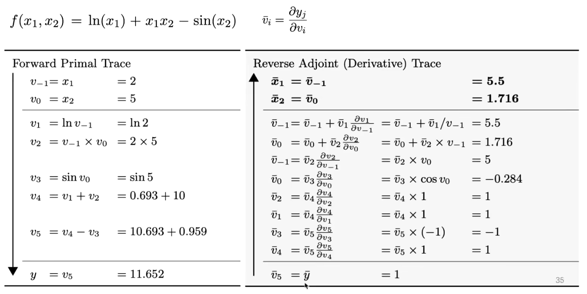
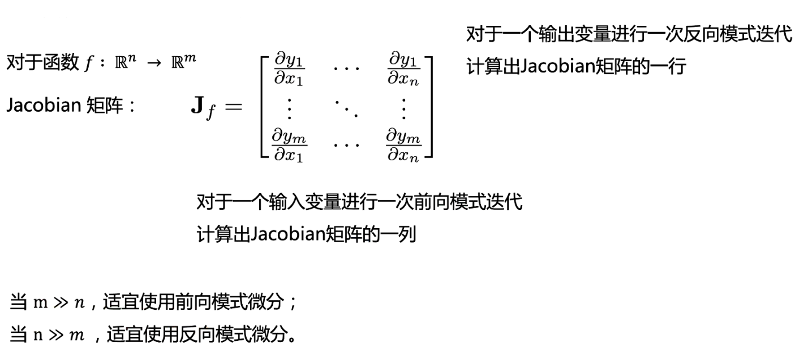
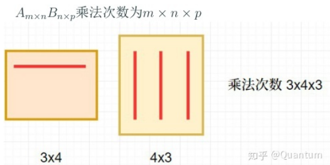
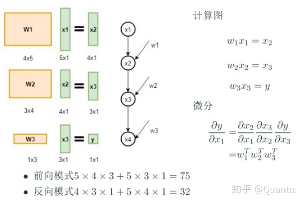

再谈自动微分：自动微分中的前向模式与反向模式
什么是自动微分
自动微分(Automatic Differentiation)是什么？微分是函数在某一处的导数值，自动微分就是使用计算机程序自动求解函数在某一处的导数值。
计算微分的四种方式
常见的求解微分的方式，可分为以下四种：
- 手动求解法(Manual Differentiation)
所谓手动求解法就是手动算出求导公式，然后将公式编写成计算机代码完成计算。比如对于函数 \(f(x) = x^2\) 求微分，首先根据求导公式表找出其导数函数
\[
f'(x) = 2x
\]
- 数值微分法(Numerical Differentiation)
数值微分法直接根据微分的极限定义形式：
\[
f'(x)=\frac{df}{dx}=\lim_{\\Delta x \to 0}\frac{f(x+ \\Delta x) - f(x)}{\\Delta x}
\]
当然极限的定义里Δx是趋于0的，我们实际数值计算的时候可以找一个很小的数h：
\[
f'(x)=D_+(h)=\frac{f(x+h) - f(x)}{h}
\]
- 符号微分法(Symbolic Differentiation)
符号微分就是我们在大学微积分里学的方法，通过符号（包括分部积分法这种trick）计算直接求出微分的“解析”形式。然后再带入自变量的值去求解导数。
- 自动微分法(Automatic Differentiation)
前向模式
这里以图片中的\(f(x_1,x_2)\)为例

图中求导过程的每一步都是在求\(v_{i}\) 对 \(v_{-1}\)的导数，这种方式可以很方便的求得多个输出对单个输入的导数，准则是链式法则。反向模式
这里以图片中的\(f(x_1,x_2)\)为例

图中求导过程的每一步都是在求\(y\) 对 \(v_{i}\)的导数，即单个输出对所有输入的导数，准则也是链式法则。 反向微分的好处是一次可以算出所有输入参数的偏导数。 对于神经网络来说，损失函数的输出值为标量，但是参数矩阵非常多，针对这种情况一般采用反向微分计算较为合适。复杂度分析

如上图所述，针对从n维到m维的映射，采用前向模式微分或反向模式微分要看n和m的大小而定。比如下面的例子

这里y对x1的导数是一个与x1相同形状的向量，前向模式计算微分矩阵乘法从左至右，反向模式计算微分矩阵乘法从右至左，算法复杂度一目了然。总结
任何一个知识点都值得深挖，这里还涉及计算图的并行计算相关内容，比如如何并行的对节点的梯度进行计算，由于这不是本人的专业在此就不在深入研究。 引用马哲中的一个理论：对一个事物的认识往往需要从实践到认识、再由认识到实践的多次反复，才能完成。
参考链接
- https://zhuanlan.zhihu.com/p/161635270
- https://zhuanlan.zhihu.com/p/61103504
- https://www.bilibili.com/video/BV1ZA411H7BU
- http://fancyerii.github.io/books/autodiff/
- https://arxiv.org/pdf/1502.05767.pdf
最后更新:
December 4, 2023
创建日期: December 4, 2023
创建日期: December 4, 2023